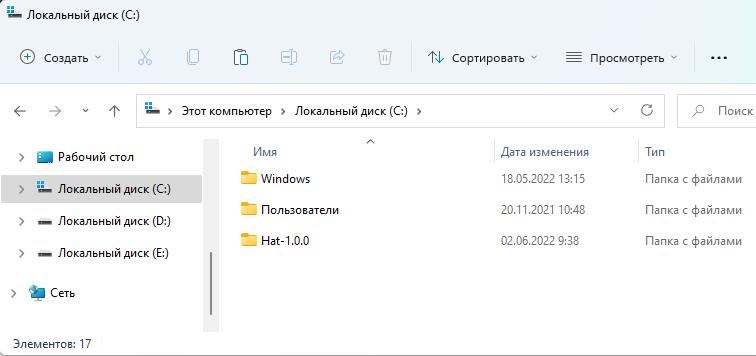
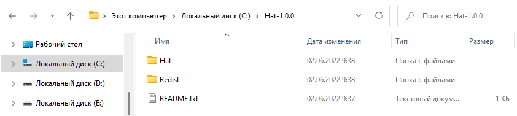
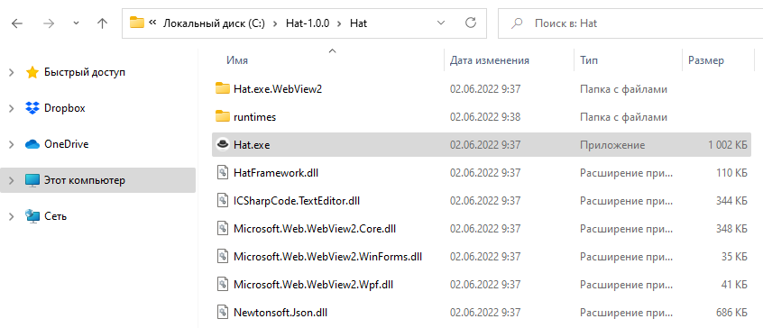

Installing and launching the browser Hat
1. Download the browser from the official GitHub page: https://github.com/SomovStudio/Hat/
Check the archive with an antivirus program and if everything is in order, open the archive properties and turn on the "Unlock" flag so that the system does not ask you for permission every time you start the browser.
2. The application is completely portable and the downloaded archive can be unzipped to any location on the hard disk.
Tip: it is better not to install in the Program Files folder, otherwise you will have to give the application administrator rights, unzip it to the root of the disk.

go to the folder Hat-1.0.0

3. The Redist folder contains the package installers Microsoft .NET Framework 4.8 и Microsoft Edge WebView2

4. The application itself is located in the Hat folder.

The browser is launched by a file Hat.exe
Created with the Personal Edition of HelpNDoc: Full-featured Help generator